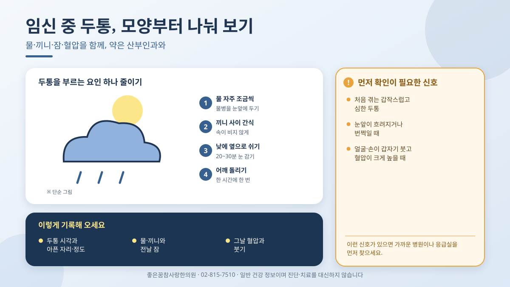

이종호 한의사 감수좋은꿈참사랑한의원 대표원장 (한의사 면허번호 19769)발행 2026-11-26 · 수정 2026-11-27
이 글의 차례
오후 세 시쯤, 관자놀이가 지끈거리기 시작해요. 예전 같으면 진통제 한 알을 먹고 넘어갔을 텐데, 지금은 약통 앞에서 손이 멈춥니다. '이거 먹어도 되나. 아기한테 괜찮을까.' 결국 약은 내려놓고 이마를 손으로 누르며 오후를 버티시죠.
임신 중 두통으로 오시는 분들께 제일 자주 듣는 말은 아프다는 말보다 '약을 못 먹으니 어떻게 해야 할지 모르겠다'는 말이에요. 아픈 것도 힘든데, 마음 놓고 쓸 수 있는 방법이 없다는 막막함이 더 크게 느껴지는 거죠. 저는 그 막막함부터 같이 덜어 드리고 싶어요.
임신 초기엔 두통이 오히려 잦아지는 분이 많아요. 원래 그래요. 몸속 호르몬이 크게 바뀌고, 입덧으로 물과 음식을 제대로 못 드시고, 커피를 갑자기 끊으시는 경우도 많거든요. 중기에 접어들면 한결 덜해지는 분이 있는가 하면, 후기까지 이어지는 분도 계십니다.
그래서 저는 '두통이 있다'와 '어떤 두통이다'를 나눠서 봐요. 둘은 다른 얘기거든요. 언제 시작했는지, 어디가 아픈지, 무엇을 하면 덜하고 무엇을 하면 심해지는지. 이 대답들이 모이면 생활에서 손댈 곳이 보이기 시작해요.
임신 중 두통은 어떤 모습으로 오나요
임신 중 두통은 대개 머리 전체가 조이거나, 이마와 관자놀이가 무겁게 눌리는 느낌으로 옵니다. 뒷목과 어깨가 함께 뻣뻣해지는 긴장성 두통의 모양이 가장 흔합니다. 오후로 갈수록, 오래 앉아 있을수록 심해지는 경우가 많습니다.
예전부터 편두통이 있던 분은 임신 뒤 양상이 달라지기도 합니다. 중기 이후 오히려 편두통이 줄었다고 하시는 분이 많지만, 반대로 초기에 더 잦아졌다고 하시는 분도 계십니다. 같은 사람이라도 임신 시기마다 달라질 수 있다는 점을 알아 두시면 덜 당황하십니다.
코가 막히고 이마와 광대 쪽이 무겁게 아픈 경우도 있습니다. 임신 중에는 코 점막이 쉽게 붓기 때문에, 코막힘이 두통처럼 느껴지기도 합니다. 이럴 때는 머리보다 코와 잠을 먼저 살피는 편이 실마리가 됩니다.
왜 임신 중에 두통이 잦아질까요
임신 초기에는 여성 호르몬이 빠르게 늘어나고 몸속 혈액량도 서서히 많아집니다. 혈관이 이 변화에 적응하는 동안 머리가 무겁고 지끈거리는 날이 생길 수 있습니다. 대부분은 몸이 새 균형을 찾으면서 조금씩 잦아듭니다.
생활의 변화도 크게 작용합니다. 두통을 부르는 흔한 이유를 꼽아 보면 이렇습니다.
- 입덧으로 물과 음식을 충분히 못 드신 날
- 커피를 갑자기 끊거나 크게 줄인 직후
- 밤에 화장실 때문에 자주 깨서 잠이 짧아진 날
- 배가 나오며 자세가 바뀌어 목과 어깨가 굳은 날
- 끼니 사이가 길어져 속이 비어 있는 시간이 긴 날
- 회사 일이나 집안일로 긴장이 이어진 날
이 가운데 물과 끼니, 카페인은 생각보다 영향이 큽니다. 입덧이 심한 시기에는 하루 동안 마신 물이 컵 두세 잔도 안 되는 경우가 흔하고, 하루 두세 잔 마시던 커피를 하루아침에 끊으면 며칠 동안 머리가 묵직할 수 있습니다.
임신 중 두통, 다른 두통과 어떻게 다르게 보나요
임신 중이라고 해서 두통의 종류가 새로 생기는 것은 아닙니다. 긴장성 두통, 편두통, 코막힘에서 오는 두통처럼 평소에도 있는 두통이 더 자주, 혹은 다르게 나타나는 경우가 대부분입니다. 그래서 평소 두통과 무엇이 달라졌는지가 중요한 단서가 됩니다.
다만 임신 중기 이후, 특히 후기에 새로 생긴 두통은 조금 더 주의 깊게 봅니다. 혈압이 오르면서 두통이 함께 오는 경우가 있기 때문입니다. 평소보다 얼굴과 손이 갑자기 붓거나, 눈앞이 번쩍이는 느낌이 함께 있다면 두통만의 문제가 아닐 수 있습니다.
그래서 저는 임신 중 두통으로 오신 분께 집에서 혈압을 재 보실 수 있는지 여쭙습니다. 혈압계가 없으시면 산부인과 검진 때 잰 숫자라도 기억해 두시면 좋습니다. 두통이 있는 날의 혈압 숫자는 산부인과 선생님께도 아주 쓸모 있는 정보입니다.
집에서 해 보는 간단한 점검
두통이 올 때마다 아래 질문에 스스로 답해 보세요. 머릿속으로만 떠올려도 되고, 휴대폰 메모에 짧게 적어 두셔도 됩니다.
- 오늘 물은 몇 잔 마셨나, 끼니는 거르지 않았나
- 어젯밤 잠은 몇 시간, 몇 번 깼나
- 아픈 자리는 이마, 관자놀이, 뒷목, 한쪽 머리 가운데 어디인가
- 쉬거나 누우면 덜해지는가, 그대로인가
- 얼굴이나 손이 평소보다 부었는가
- 오늘 혈압은 얼마였나
대부분의 날에는 물이 부족했거나, 잠이 짧았거나, 오래 같은 자세로 있었다는 답이 나옵니다. 그런 날은 생활을 조금만 바꿔도 머리가 한결 가벼워지는 경우가 많습니다. 반대로 쉬어도 그대로이거나 점점 심해진다면 기록을 들고 진료를 받아 보시는 것이 좋습니다.
임신 시기마다 두통은 어떻게 달라지나요
초기에는 호르몬 변화와 입덧, 피로가 겹치면서 두통이 잦아지는 분이 많습니다. 이 시기에는 몸이 쉬라는 신호를 크게 보내는 때라서, 낮에 잠깐 눕는 것만으로도 머리가 한결 가벼워졌다고 하시는 분이 많습니다. 물과 끼니를 챙기는 일이 무엇보다 먼저입니다.
중기에는 입덧이 가라앉고 컨디션이 돌아오면서 두통도 줄어드는 분이 많습니다. 다만 배가 나오기 시작하며 자세가 바뀌고, 다시 일과 집안일을 늘리면서 목과 어깨가 굳어 오는 두통이 생기기도 합니다. 이때는 자세와 쉬는 시간을 함께 살핍니다.
후기에는 잠이 쪼개지고 몸이 무거워지면서 아침에 머리가 묵직한 날이 늘어납니다. 이 시기에 새로 생긴 두통은 혈압과 붓기를 함께 보는 것이 중요합니다. 검진 간격도 짧아지니, 두통 기록을 들고 가서 산부인과 선생님께 보여 드리면 좋습니다.
머리가 아플 때 잠깐 해 볼 수 있는 자세와 호흡
두통이 시작될 때 할 수 있는 작은 방법이 있습니다. 먼저 하던 일을 멈추고 등받이가 있는 의자에 깊숙이 앉습니다. 어깨를 귀 쪽으로 천천히 끌어올렸다가 툭 떨어뜨리기를 다섯 번 정도 해 봅니다. 굳어 있던 어깨가 조금 내려앉는 느낌이 들면 충분합니다.
그다음 코로 넷을 세며 들이쉬고, 입으로 여섯을 세며 천천히 내쉽니다. 내쉬는 숨을 조금 길게 하면 몸의 긴장이 느슨해지기 쉽습니다. 다섯 번 정도 반복한 뒤 물 한 잔을 마시고, 가능하다면 옆으로 누워 10분 정도 눈을 감아 보세요.
이 방법은 두통을 없애는 처방이라기보다, 긴장이 두통을 키우기 전에 한 번 끊어 주는 쉼표에 가깝습니다. 하루 두세 번, 두통이 오기 전에 미리 해 두시는 것도 좋습니다.
먼저 이렇게 여쭙니다
처음 오시면 저는 대략 이런 순서로 여쭙니다. 미리 생각해 오시면 이야기가 훨씬 수월해집니다.
- 지금 임신 몇 주이고, 산부인과에서 들은 주의 사항이 있나요?
- 두통은 언제부터, 일주일에 몇 번 정도 오나요?
- 임신 전에도 두통이나 편두통이 있었나요?
- 최근 산부인과 검진에서 혈압은 어땠나요?
- 입덧, 코막힘, 잠, 변비 가운데 함께 불편한 것이 있나요?
- 지금 드시는 약이나 영양제는 무엇인가요?
임신 전 두통 이야기는 생각보다 중요합니다. 원래 있던 두통이 임신 뒤 어떻게 달라졌는지, 아니면 임신 뒤 처음 생긴 두통인지에 따라 살피는 방향이 달라지기 때문입니다.
일상에서 먼저 해 볼 수 있는 것
약에 기대기 어려운 시기일수록 생활에서 두통을 부르는 요인 하나를 줄이는 것이 큰 힘이 됩니다. 한꺼번에 다 바꾸려 하기보다 오늘 할 수 있는 것 하나부터 골라 보세요.
- 물병을 눈에 보이는 곳에 두고, 한 번에 많이 말고 자주 조금씩 마시기
- 끼니 사이가 길어지지 않도록 작은 간식을 챙겨 두기
- 커피는 갑자기 끊기보다 산부인과에서 들은 범위 안에서 천천히 줄이기
- 낮에 20~30분 정도 옆으로 누워 쉬는 시간 만들기
- 한 시간에 한 번은 일어나 어깨를 크게 돌리고 목을 천천히 풀기
- 머리가 아플 때 이마나 뒷목에 시원하거나 따뜻한 수건 대 보기
시원한 수건과 따뜻한 수건은 두통의 모양에 따라 편한 쪽이 다릅니다. 뒷목과 어깨가 뻣뻣한 두통이라면 따뜻한 수건이, 머리가 욱신거리며 열감이 있는 두통이라면 시원한 수건이 더 편하게 느껴지는 분이 많습니다. 몸이 편한 쪽을 고르시면 됩니다.
잠은 두통과 가장 가까운 생활 요인입니다. 밤에 자주 깨신다면 잠들기 두세 시간 전부터는 물을 조금 줄이고, 낮 동안 물을 넉넉히 드시는 쪽으로 시간을 옮겨 보세요. 옆으로 누울 때 다리 사이에 베개를 끼우면 목과 허리가 덜 비틀려 아침 두통이 줄었다는 분도 계십니다.
화면을 오래 보는 일도 두통을 부릅니다. 휴대폰이나 모니터를 볼 때는 20분마다 먼 곳을 20초 정도 바라보며 눈을 쉬게 해 주세요. 고개가 앞으로 빠지지 않도록 화면을 눈높이에 가깝게 올리는 것만으로도 뒷목의 부담이 줄어듭니다.
한의원에서 함께 살필 수 있는 경우
임신 중이라도 산부인과와 상의한 뒤 한의원 진료를 함께 받으실 수 있습니다. 이런 분이라면 상담해 보세요.
- 뒷목과 어깨가 굳으면서 오후마다 머리가 조이는 경우
- 잠이 얕고 자주 깨서 아침마다 머리가 무거운 경우
- 입덧과 소화 불편이 두통과 함께 오는 경우
- 코막힘 때문에 이마와 눈 주위가 무겁게 아픈 경우
- 긴장하는 날마다 머리가 아파 하루를 버티기 힘든 경우
좋은꿈참사랑한의원에서는 모든 분의 맥을 먼저 짚고, 필요하다고 판단되면 진료실에 있는 혈압계로 혈압도 함께 재며, 잠과 소화, 붓기, 대소변을 여쭙습니다. 뒷목과 어깨는 옷 위로 만져 보며 어디가 굳어 있는지 확인합니다. 배를 누르는 진찰은 하지 않습니다.
진찰한 내용을 바탕으로 지금 상태에 맞는 방법을 정합니다. 침은 임신 중 피하는 자리를 가려 조심스럽게 쓰고, 목과 어깨의 긴장을 푸는 생활 동작을 함께 알려 드립니다. 한약은 임신 중임을 먼저 알려 주시고, 산부인과 선생님과 상의한 뒤 신중하게 정합니다.
산부인과에서 처방받은 약이 있다면 혼자 멈추지 마세요. 한의원 진료는 산부인과 진료를 대신하는 것이 아니라 나란히 가는 것입니다. 산부인과에서 엄마와 아기의 상태를 챙기고, 한의원에서는 그 사이의 긴장과 잠, 소화를 함께 살핀다고 생각해 주시면 됩니다.
이렇게 기록해 오시면 상담이 쉬워집니다
두통은 아픈 날만 떠올리기 쉬워서, 기록이 있으면 흐름이 훨씬 잘 보입니다. 1~2주 정도만 간단히 적어 보세요.
- 두통이 시작된 시각과 끝난 시각
- 아픈 자리와 정도(0~10)
- 그날 마신 물의 양과 끼니
- 전날 잠든 시각, 깬 시각, 밤에 깬 횟수
- 잴 수 있다면 그날의 혈압
- 두통과 함께 있었던 불편(붓기, 코막힘, 메스꺼움 등)
기록을 나란히 놓고 보면 '물을 적게 마신 날', '잠이 짧았던 날'처럼 두통과 겹치는 날이 눈에 들어옵니다. 그 연결을 찾는 것이 약에 기대지 않고 할 수 있는 첫걸음입니다.
약 앞에서 망설이는 마음에게
두통약 앞에서 망설이는 건 아기를 생각하는 마음에서 나오는 자연스러운 반응이에요. 다만 참기만 하는 게 늘 답은 아니에요. 임신 중에도 상의해서 쓸 수 있는 약이 있는지는 산부인과 선생님께 여쭤 보시면 돼요.
참을지 쓸지를 혼자 고민하기보다, 두통의 모양과 기록을 들고 상의하시는 쪽이 마음도 편해요. 몸의 긴장과 잠을 살피는 건 제가 맡을게요. 대신 하나만 부탁드려요. 머리가 지끈거리기 시작하면 물 한 잔부터 천천히 드셔 주세요. 딴 건 하시던 대로 편하게 하셔도 돼요.
가족에게도 두통 얘기를 해 두세요. 머리가 아플 때 설거지 한 번, 장보기 한 번을 대신 맡아 주는 것만으로도 쉴 틈이 생기거든요. 혼자 버티는 시간이 줄어들수록 두통도 덜 무겁게 느껴지는 경우가 많아요.
다음에 오시면 기록부터 함께 펼쳐 볼게요. 궁금한 건 사소해 보여도 그냥 편하게 물어보세요.
이런 증상은 먼저 확인이 필요합니다
- 지금까지 겪어 본 적 없는 갑작스럽고 심한 두통이거나, 눈앞이 흐려지거나 번쩍이는 느낌이 함께 있는 경우
- 두통과 함께 얼굴과 손이 갑자기 붓고, 명치 아래가 아프거나 혈압이 평소보다 크게 높은 경우
이런 신호가 있으면 한의원보다 가까운 병원이나 응급실을 먼저 찾으세요.
함께 읽으면 좋은 글
- 임신 중이거나 임신 가능성이 있을 때는 한의원에 무엇을 알려야 하나요?
- 스트레스를 받으면 뒷목이 당기고 머리가 아픈 긴장성 두통은 어떻게 살피나요?
- 커피를 끊거나 줄였더니 머리가 지끈거리는 카페인 금단 두통은 왜 생기고 어떻게 넘기나요?
- 임신 중 밤에 잠이 오지 않거나 자주 깰 때는 무엇을 살피고 어떻게 지내나요?
- 임신 중 입덧이 심할 때는 하루를 어떻게 지내고, 한의원에는 무엇을 알려야 하나요?

여쭙는 것
- 지금 임신 몇 주이고, 산부인과에서 들은 주의 사항이 있나요?
- 두통은 언제부터, 일주일에 몇 번 정도 오나요?
- 임신 전에도 두통이나 편두통이 있었나요?
생활에서 해 볼 것
- 물병을 눈에 보이는 곳에 두고, 한 번에 많이 말고 자주 조금씩 마시기
- 끼니 사이가 길어지지 않도록 작은 간식을 챙겨 두기
- 커피는 갑자기 끊기보다 산부인과에서 들은 범위 안에서 천천히 줄이기
한의원에서 함께 살필 것
- 뒷목과 어깨가 굳으면서 오후마다 머리가 조이는 경우
- 잠이 얕고 자주 깨서 아침마다 머리가 무거운 경우
- 입덧과 소화 불편이 두통과 함께 오는 경우
먼저 확인이 필요한 신호
- 지금까지 겪어 본 적 없는 갑작스럽고 심한 두통이거나, 눈앞이 흐려지거나 번쩍이는…
- 두통과 함께 얼굴과 손이 갑자기 붓고, 명치 아래가 아프거나 혈압이 평소보다 크게…
한눈에 보는 표
| 구분 | 핵심 |
|---|---|
| 여쭙는 것 | 지금 임신 몇 주이고, 산부인과에서 들은 주의 사항이 있나요? 두통은 언제부터, 일주일에 몇 번 정도 오나요? |
| 생활에서 해 볼 것 | 물병을 눈에 보이는 곳에 두고, 한 번에 많이 말고 자주 조금씩 마시기 끼니 사이가 길어지지 않도록 작은 간식을 챙겨 두기 |
| 한의원에서 함께 살필 것 | 뒷목과 어깨가 굳으면서 오후마다 머리가 조이는 경우 잠이 얕고 자주 깨서 아침마다 머리가 무거운 경우 |
| 먼저 확인이 필요한 신호 | 지금까지 겪어 본 적 없는 갑작스럽고 심한 두통이거나, 눈앞이 흐려지거나 번쩍이는 느낌이 함께 있는 경우 두통과 함께 얼굴과 손이 갑자기 붓고, 명치 아래가 아프거나 혈압이 평소보다 크게 높은 경우 |
자주 묻는 질문
임신 중에 두통약을 먹어도 되나요?
임신 시기와 약의 종류에 따라 다르기 때문에 산부인과 선생님과 상의해서 정하시는 것이 좋습니다. 한의원에서는 약을 쓸지 말지를 정하지 않고, 생활에서 두통을 부르는 요인을 함께 살핍니다.
임신 중에 침을 맞아도 괜찮나요?
임신 중임을 먼저 알려 주시면 피하는 자리를 가려 조심스럽게 진료합니다. 산부인과에서 조심하라고 들은 내용이 있다면 처음에 말씀해 주세요.
커피를 끊었더니 머리가 아픈데 다시 마셔야 하나요?
갑자기 끊으면 며칠 동안 머리가 묵직할 수 있습니다. 하루 마셔도 되는 양은 산부인과에서 들은 범위를 따르시고, 끊으실 때는 며칠에 걸쳐 천천히 줄이시는 편이 덜 힘듭니다.
임신 중 두통에 한약을 먹어도 되나요?
임신 중이라는 사실을 먼저 알려 주시고, 산부인과 선생님과 상의한 뒤 지금 상태에 맞는지 신중하게 정합니다. 드시는 영양제와 약도 함께 확인합니다.
집에서 혈압을 재 보는 것이 도움이 되나요?
네, 두통이 있는 날의 혈압 숫자는 산부인과 선생님께도 저에게도 중요한 정보입니다. 앉아서 1~2분 쉰 뒤 같은 팔로 재고, 두통 기록 옆에 함께 적어 두세요.
좋은꿈참사랑한의원은 재진 때 지난번 이야기부터 이어서 여쭙니다. 진료시간과 예약은 오시는 길에서 확인하세요.
어디서 상담받을 수 있나요?
좋은꿈참사랑한의원은 서울 동작구 만양로2길 2 신성빌딩 3층·5층(서울 동작구 상도동, 7호선 상도역 3번 출구 근처)에 있습니다. 한의사 3명(이종호 대표원장, 조영기 수석진료원장, 정원영 진료원장)이 진료합니다. 진료시간은 평일 09:30~20:00(점심 13:00~14:00), 토·일·공휴일 09:30~15:00이며, 방문 전 전화로 확인을 권합니다. 예약은 네이버 예약, 카카오톡 상담, 전화 02-815-7510로 받습니다.
이 글은 일반적인 건강 정보이며 개인의 진단이나 치료를 대신하지 않습니다. 증상이 있거나 복용 중인 약이 있다면 진료를 통해 확인하세요. 치료 효과는 개인마다 다를 수 있습니다.
작성 기준: 일반적으로 알려져 있는 건강 정보를 참고해 정리했습니다(대표원장 감수). 증상 기록은 1~2주 동안 하루 1회, 비슷한 시간에 적어 오시면 지난 상태와 비교하기 쉽습니다.